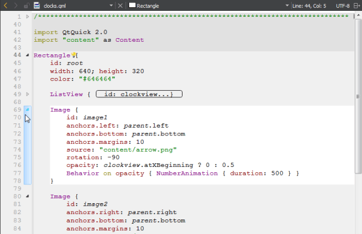

Highlight code blocks
Block highlighting visually separates parts of the code that belong together. For example, when you place the cursor within a set of braces, the code enclosed in braces is highlighted.

To enable block highlighting, go to Preferences > Text Editor > Display and select Highlight blocks.
Fold code blocks
Select the folding markers to collapse and expand blocks of code within braces. In the image above, the folding markers are located between the line number and the text pane.
To show the folding markers, go to Preferences > Text Editor > Display and select Display folding markers. This option is enabled by default.

Fold all comment blocks
To fold all comment blocks, go to Tools > C++ > Fold All Comment Blocks.
To unfold all comment blocks, select Unfold All Comment Blocks.
Animate matching braces
When the cursor is on a brace, the matching brace is animated by default.
To turn off the animation and just highlight the block and the braces, go to Preferences > Text Editor > Display and clear Animate matching parentheses.
Move between code blocks
Use keyboard shortcuts to move within and between code blocks:
- To go to block end, press Ctrl+].
- To go to block start, press Ctrl+[.
To also select the lines from the cursor position to the end or beginning of the block, press Ctrl+Shift+] and Ctrl+Shift+[, respectively.
See also How To: Edit Code and Edit Mode.